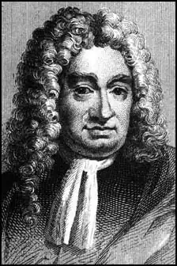
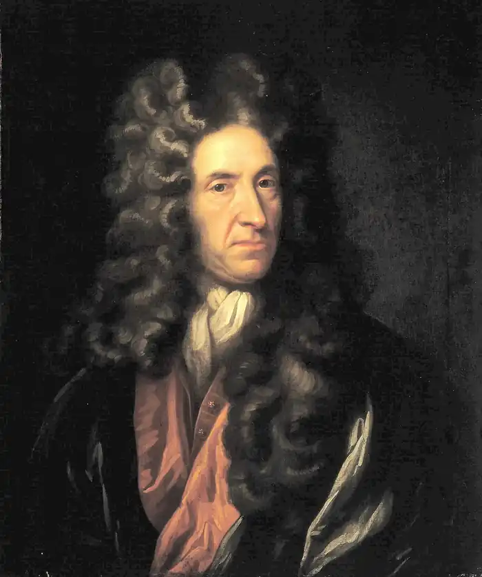
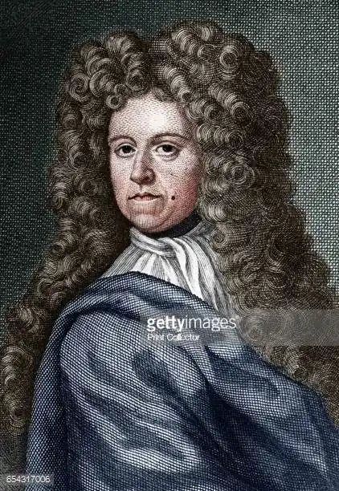

ДАНІЄЛЬ ДЕФО
(1661 — 1731)
Майбутній видатний англійський письменник, засновник європейського реалістичного роману нового часу Данієль Дефо народився в Лондоні у 1660 чи 1661 році (більш точних відомостей немає). Його батько Джеймс Фо був багатим торгівцем м'ясом і свічним фабрикантом та знаменитим дисидентом-пуританином (тобто противником панівної англіканської церкви). Вихований у релігійному дусі, в чотирнадцять років Дефо був відданий до приватної протестантської школи в Ньюінгтоні. Він завжди згадував про цю школу з теплими почуттями, бо вона дала йому багато потрібних знань, які так знадобилися йому в майбутньому. В дев'ятнадцять років Дефо завершив своє шкільне навчання і за порадою батька вирішує стати комерсантом. Батько посилає його (для вивчення бухгалтерії та торгівельної практики) до контори оптової панчішної фірми, яка знаходилась у лондонському Сіті й мала зв'язки із закордоном. Період навчання Дефо в Торговельному домі в Сіті закінчився на початку 1685 року. Цього ж року він відкрив оптову панчохову торгівлю в Корнхіллі. Його фірма існувала до 1694 року. До кінця своїх днів Данієль Дефо залишався зразковим англійським негоціантом, торгуючи винами, тютюном, цеглою й черепицею, неодноразово вдаючись до дуже ризикованих справ, зазнаючи інколи банкрутства, але щоразу знаходячи вихід із найскрутніших ситуацій. Письменник завжди перебував у середині політичної та релігійної боротьби своєї тривожної епохи. Так, у 1685 році він бере участь у повстанні герцога Монмаута проти політики Іакова II. Повстання було придушено, герцога Монмаута страчено, і Дефо ледве зміг сховатися від переслідування влади. У квітні 1687 року була підписана королівська декларація про завершення дій усіх каральних законів, які належать до віровизнання. Саме ця декларація стала приводом для першого літературного виступу Дефо: у віці двадцяти шести років він пише памфлет "Лист з міркуваннями про останню декларацію його високості стосовно свободи совісті", який характеризує Дефо як зрілого політичного діяча й письменника. Памфлет, спрямований проти королівської декларації, викликав незадоволення більшості його друзів, які не зрозуміли його намірів, що було для Дефо джерелом великого розчарування. Під впливом цього почуття він на якийсь час покинув щойно розпочаті ним літературні заняття і вдався виключно до торговельних справ, які він розширив і переніс за кордони Англії, зав'язавши комерційні стосунки з Іспанією та Португалією. За його творами ми простежуємо, що ці справи змусили його відвідати Іспанію, де він жив якийсь час. Починаючи з 90-х років XVII століття, Дефо виступає як поет-сатирик і публіцист. Одним із найкращих зразків його публіцистики є трактат "Досвід про проекти" (1697), в якому автор розглядає напрямки покращання існуючих соціальних порядків шляхом реформ фінансово-комерційного характеру, покращання шляхів сполучення, заснування академії, введення жіночої освіти. Памфлет "Клопотання бідняка" (1698) викривав несправедливість законів, що карають бідняків і захищають багатіїв. Особливе значення мала віршована сатира "Чистокровний англієць" (1701), що захищала Вільгельма III (голландця за походженням), якого прихильники Стюартів звинувачували в тому, що він не чистокровний англієць і не має права посідати англійський престол. У сатирі автор нагадує, що історія Англії — це, перш за все, історія поєднання різних народів, зусиллями яких була створена велич Великої Британії. Сатира набула великої популярності в народному середовищі, бо стверджувала право людини пишатися не своїм походженням, а особистою доблестю, висміювала й засуджувала аристократичну пихатість дворян. Дефо стає впливовою політичною фігурою. Після загибелі Вільгельма III до влади прийшла Анна (1702— 1714). У країні посилилася реакція, почалися переслідування пуритан-дисидентів. У цей час Дефо анонімно друкує памфлет-містифікацію "Найкоротший спосіб розправи з дисидентами" (1702), в якому він від імені фанатика-реакціонера закликав посилати на ешафот усіх, хто виступав проти офіційної церкви. Коли сатиричний задум письменника було розкрито, памфлет спалили, а Дефо опинився у в'язниці й після сплати великого штрафу тричі виставлявся біля ганебного стовпа. У в'язниці Дефо написав "Гімн ганебному стовпу" (1703), який натовп, що зібрався підтримати письменника, співав як народну пісню на знак пошани до автора. Звільнення з в'язниці стало можливим лише через згоду Дефо стати таємним агентом влади, і протягом багатьох років він змушений був виконувати таємні доручення уряду. Зазначимо, що 1703 рік став роком народження феномену Дефо в літературі до свого родового прізвища Фо саме в 1703 році він додає частку "Де", і з цього часу енергійний торговець і популярний памфлетист Фо перетворюється на відомого першокласного журналіста-новатора, прогресивного публіциста (який, щоправда, втрачає колишній радикалізм і більш обережно висловлює своє ставлення до тих чи інших негараздів у суспільстві), а згодом видатного письменника Дефо, який став гордістю англійської літератури й започаткував безліч різновидів жанру роману (пригодницький, біографічний, психологічний, історичний, кримінальний, виховний і роман-подорож). Протягом десяти років, з 1704 по 1713 рік, Дефо регулярно друкує статті в газеті "Ревю", яку він практично самотужки видає. Його журнально-публіцистична спадщина, що налічує близько чотирьохсот назв, була різноманітною за тематикою: політика й економіка, історія і література, релігія і мораль. Дефо значно розвинув вітчизняну журналістику, дав їй могутній поштовх для подальшого розвитку. Деякий час Дефо жив в Единбурзі, де він придбав безліч знайомих і став дуже популярним. Життя в Шотландії йому так сподобалося, що він навіть хотів залишитися там назавжди. У той час, коли обговорювалося питання про об'єднання Англії та Шотландії у шотландському парламенті, вийшла його поема "Каледонія", яка була написана на честь Шотландії; в 1707 році, після заключного затвердження акта про об'єднання, Дефо написав "Історію об'єднання двох королівств". Але в історію світової літератури він увійшов передусім як видатний романіст, автор безсмертного "Робінзона Крузо". Дефо було 59 років, коли з'явилася перша частина цієї видатної книги (1719). Задум роману виник на основі реальної історії, що сталася з шотландським моряком Олександром Селькірком, який упродовж чотирьох років (1704 — 1708) прожив на безлюдному острові Хуан Фернандес у Тихому океані, поки не був підібраний кораблем під командуванням Вудса Роджерса. Дефо прочитав про ці події в книзі Роджерса "Плавання навкруги світу" (1712) і в нарисі Стіля "Історія Олександра Селькірка". Ці факти у творчій свідомості письменника трансформувалися в масштабне художнє полотно, яке поетично оспівало романтику подорожей та пригод і, водночас, було сповнене глибокими соціально-філософськими узагальненнями, багатим життєвим досвідом й особистими авторськими спостереженнями. Герой Дефо — Робінзон Крузо — двадцять вісім років живе на безлюдному острові й не тільки виживає, але й створює свій особистий світ. В образі Робінзона автор втілює багатовікову історію боротьби людства за існування, особливо підкреслюючи визначальну роль праці. Напружена праця і творча діяльність розуму становлять, на думку Дефо, першоджерела перетворення світу й духовного звеличення людини. Роман "Робінзон Крузо" мав феноменальний успіх у читача, що спонукало письменника на створення продовження. Ним став роман "Подальші пригоди Робінзона Крузо" (1719), а через рік "Серйозні роздуми протягом життя і дивовижні пригоди Робінзона Крузо, з його баченням ангельського світу" (1720). Художній рівень та ідейний зміст цих двох романів виявився значно нижчим за перший. Це не зупинило творчої наснаги Дефо, і після "Робінзона Крузо" він пише багато романів різноманітної жанрової забарвленості: авантюрні романи "Молль Флендерс" (1722), "Полковник Джек" (1722), "Роксана" (1724), морський пригодницький роман "Капітан Сінглтон" (1720), історичний роман "Щоденник чумного року" (1722), романи-мемуари "Мемуари кавалера" (1720), "Мемуари англійського офіцера, капітана Джорджа Карлтона" (1728). У центрі всіх цих творів, як правило, зображено постать головного героя, який всього досягає в житті силою свого розуму, зусиллями волі, старанністю і кмітливістю, як і сам автор. Тому можна говорити про автобіографічний характер більшості центральних персонажів Дефо. Цьому також сприяє форма мемуарів, щоденника, коли розповідь ведеться від першої особи. У 1726 році вийшов його великий твір у трьох томах "Подорожі Англією і Шотландією", який донині вважають цінним історичним та статистичним матеріалом. Останній рік життя Дефо був затьмарений жахливим лихом. Він отримав жорстоке, хоча, можливо, й заслужене покарання з боку обманутого ним видавця Міста. Останній почав переслідувати його, а одного разу навіть напав на нього зі шпагою у руках; на радість, Дефо зміг обеззброїти свого супротивника. Під впливом цих постійних погроз та переслідувань цілком розбитий хворобою сімдесятирічний старий збожеволів. Переляканий погрозою помсти з боку обманутої ним людини, він втік від родини й переховувався під чужим ім'ям у різних містах Англії, постійно переїжджаючи з одного місця в інше. Нарешті у 1731 році Дефо повернувся до Лондона, де поселився в одному з віддалених кварталів Сіті, у Мурфілді. Тут 26 квітня 1731 року, зовсім самотній і старий (йому пішов 71 рік), помер знаменитий автор "Робінзона", жива легенда англійської літератури. Ніхто з родичів не знав про його загибель, тож його поховала квартирна господарка, і речі, що залишилися після нього, були продані з аукціону, щоб погасити витрати на похорон. "Робінзон Крузо" (1719) Письменнику було 59 років, коли він видав свій роман "Життя і дивовижні пригоди Робінзона Крузо". Розповідь у творі ведеться від першої особи, від особи Робінзона. Це надає зображенню ілюзії повної вірогідності. Через коротку преамбулу, що знайомить нас із біографічними даними героя, його морськими подорожами і, нарешті, описом бурі, в якій загинув корабель і вся команда, ми разом з героєм потрапляємо на безлюдний острів. Крок за кроком разом з Робінзоном Крузо, впадаючи у відчай і знаходячи сили для життя в нових умовах, ми стаємо свідками народження нового світу.